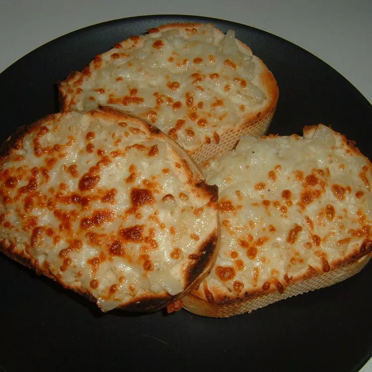

This is a great appetizer or side dish for your next get together.

Ingredients
2 French baguettes, cut into 3/4 inch diagonal slices
1 large minced onion
8 cloves minced garlic
¼ cup butter
2 cups shredded mozzarella cheese
½ cup grated Parmesan cheese
1 cup mayonnaise
Steps
Preheat the broiler.
Slice the French baguettes diagonally into 3/4 inch slices.
In a medium skillet over medium heat, melt the butter. Combine the onions and garlic in the skillet. Cook and stir until tender. Set aside to cool.
In a mixing bowl, combine the mozzarella cheese, Parmesan cheese and mayonnaise.
On a cookie sheet, arrange the French bread slices in a single layer. Spread the onion and garlic mixture on the bread slices. Spread the cheese and mayonnaise mixture over the onion and garlic mixture on the bread slices. Broil about 5 minutes, until the cheese is bubbly and slightly browned. Serve immediately.